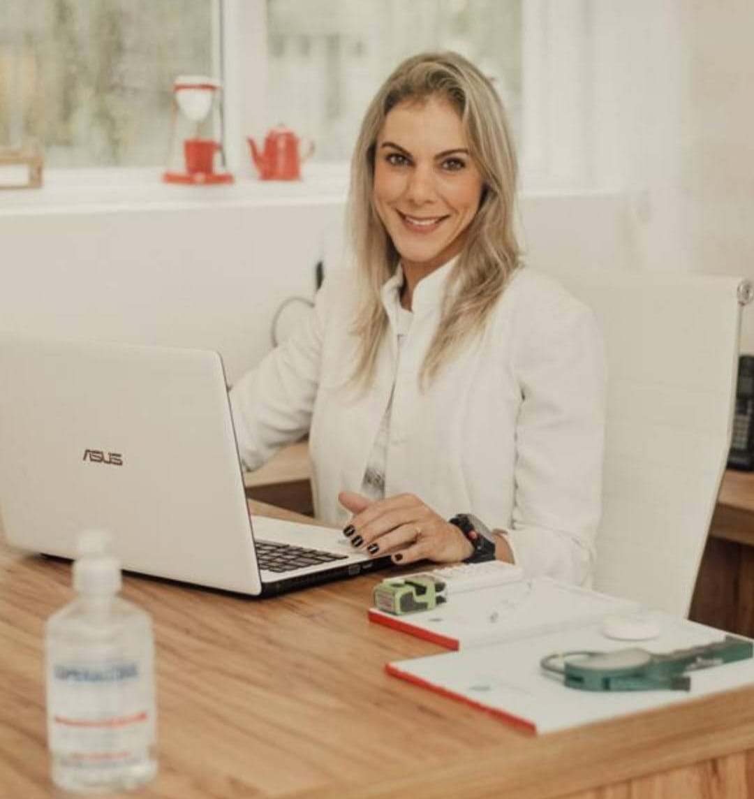

Atendimento
Presencial no consultório ou online, no seu ritmo.
O formato muda; o cuidado, não. Escolha o que couber melhor na sua rotina: em qualquer um deles o plano é individual e o acompanhamento é contínuo.

Consultório particular
Atendimento presencial no Jardim Botânico, com estrutura completa para avaliação clínica, física e comportamental.
Avaliação antropométrica completa
Consulta inicial de 60 minutos
Retornos a cada 30 a 45 dias

Consulta online
Acompanhamento completo por videochamada, para quem está fora do Rio ou prefere a praticidade de casa.
Mesma profundidade da consulta presencial
Orientação prévia para medidas e registros
Horários flexíveis, sem deslocamento

Acompanhamento por aplicativo
A dieta é entregue por um aplicativo interativo, que fica com você entre uma consulta e outra.
Registro de refeições e água
Receitas e listas de substituição
Orientações ajustadas ao longo do mês
O consultório
Jardim Botânico, Rio de Janeiro.
Endereço
R. Jardim Botânico, 568, sala 212 A
Jardim Botânico, Rio de Janeiro - RJ
22461-000
Jardim Botânico, Rio de Janeiro - RJ
22461-000
Horário de atendimento
Segunda a sexta, 08h às 17h
Sábados (eventual), 08h às 14h
Domingo, fechado
Sábados (eventual), 08h às 14h
Domingo, fechado
Estacionamento
O prédio conta com estacionamento rotativo coberto e serviço de manobrista.

Como funciona
Três etapas, um plano que você consegue seguir.

1
Anamnese completa
Histórico de saúde, exames, rotina, treino e preferências alimentares.
2
Plano individual
Cardápio flexível, com substituições reais para os dias corridos.
3
Acompanhamento
Ajustes a cada 30 a 45 dias e orientação pelo aplicativo entre as consultas.
Qual formato combina com a sua rotina?
Me diga se prefere presencial ou online e eu retorno com os horários.